✧
Шаг 01У каждого — свой вкус.
Пусть один любит искусство, а другой — городские приключения. Отвечайте отдельно, выбирайте не только «нравится», но и «не моё».
Я · ♥ искусствоМы · ♥ прогулкиТы · ♥ открытия
Свидание, выходные или путешествие на несколько дней. Расскажите, что любите вы и ваш близкий человек — мы соберём маршрут из мест, впечатлений и моментов, которые хочется запомнить.
Узнаём, что любит каждый, и чего лучше избегать.
Связываем места, настроение, бюджет и время.
Объясняем выбор и даём менять даже одну остановку.
Хороший маршрут нельзя собрать по двум галочкам «кафе» и «прогулки». Мы узнаём и мечты, и маленькие «только не это».
Пусть один любит искусство, а другой — городские приключения. Отвечайте отдельно, выбирайте не только «нравится», но и «не моё».
Можно своими словами описать идеальный вечер, место мечты и то, что испортит настроение. Эти ответы останутся в вашем профиле.
От одного дня до четырнадцати. Закрепляйте купленные билеты, заменяйте остановки, сохраняйте понравившиеся места.
Не подбирайте маршрут вслепую. Посмотрите атмосферу районов Москвы, отметьте понравившиеся места — и расскажите нам о своих желаниях.
Откройте настроение. Выбранная тема станет одним из пожеланий в вашей парной анкете.
Иллюстрации показывают атмосферу свиданий, а не конкретные заведения или подтверждённые бронирования. Наличие подходящих мест проверяйте в итоговом плане.
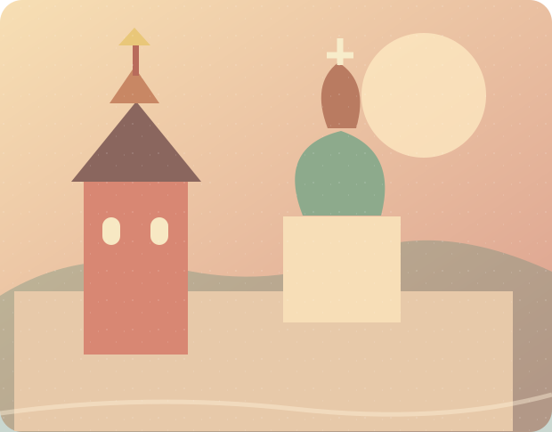
01Зарядье, площади и старинные улицы
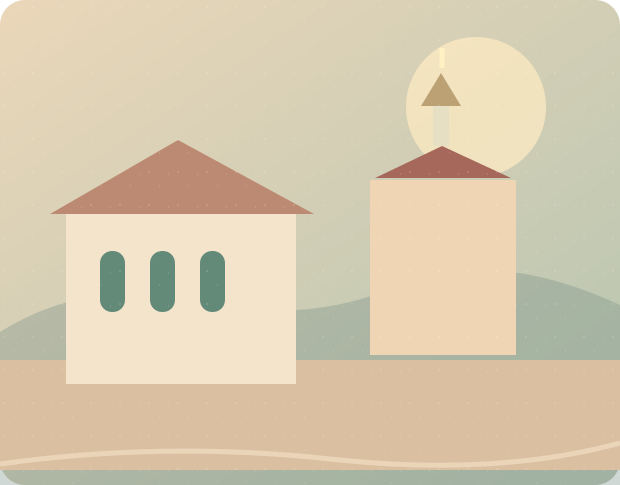
02Галереи, переулки и тихие дворы
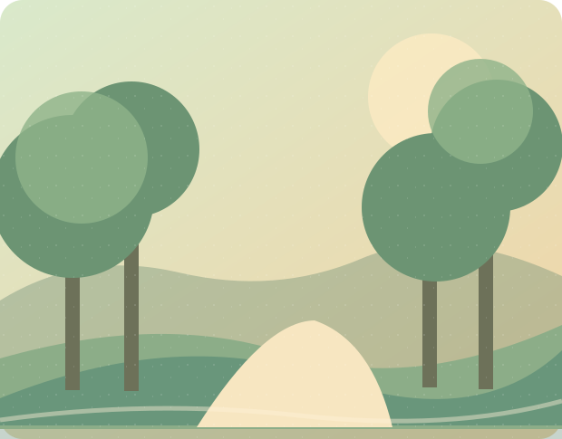
03Зелёные дорожки и река
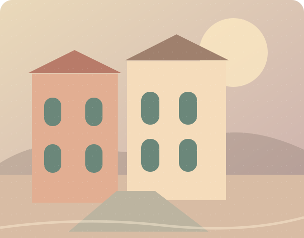
04Камерная Москва и культурный вечер
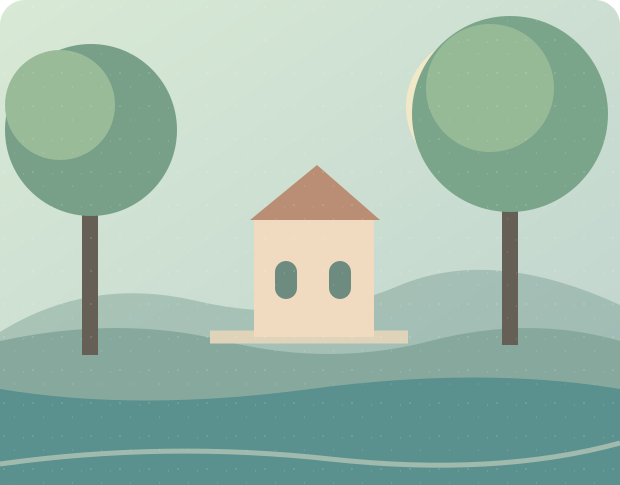
05Атмосферные встречи и уют
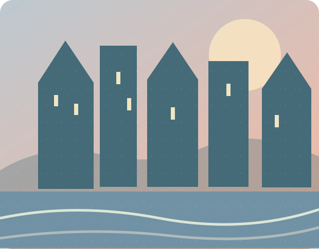
06Современный город и панорамы
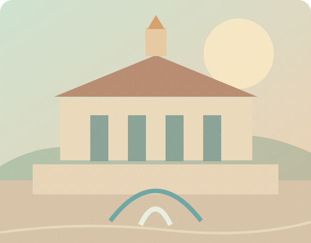
07Наука, выставки и впечатления
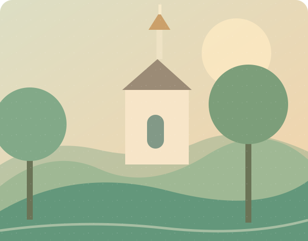
08История в природном ландшафте
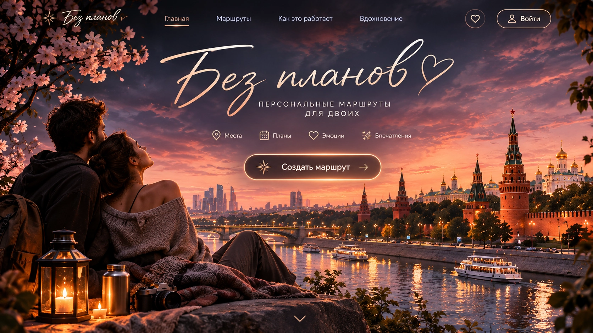
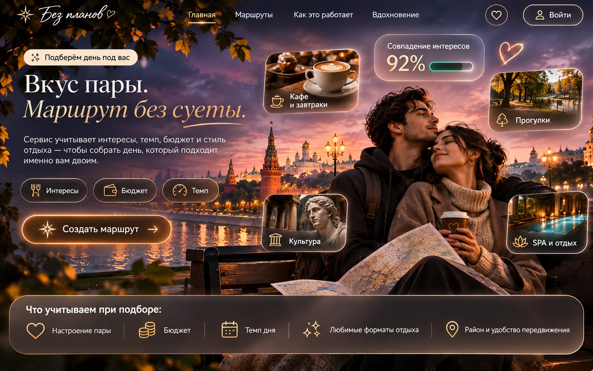
Это ранние авторские постеры с текстом внутри изображения; в рабочем интерфейсе используются отдельные настоящие кнопки и заголовки.
Выбирайте ответы, которые действительно вам подходят.
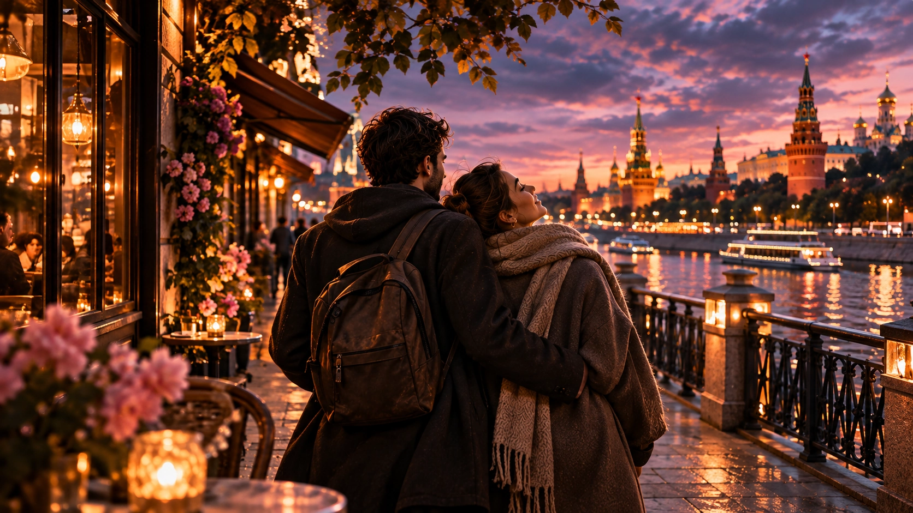
Маршруты и любимые места остаются в памяти браузера на этом устройстве. Для синхронизации между устройствами понадобится аккаунт в будущей версии.
Сохраните момент, который хочется вспомнить. Заметки остаются на этом устройстве.
Вернуться к вопросам можно в любой момент. Ответы хранятся только на этом устройстве.